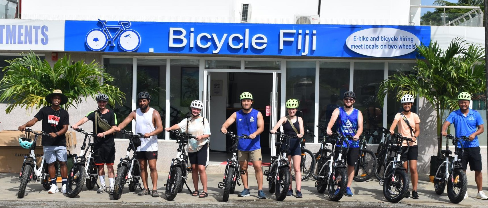
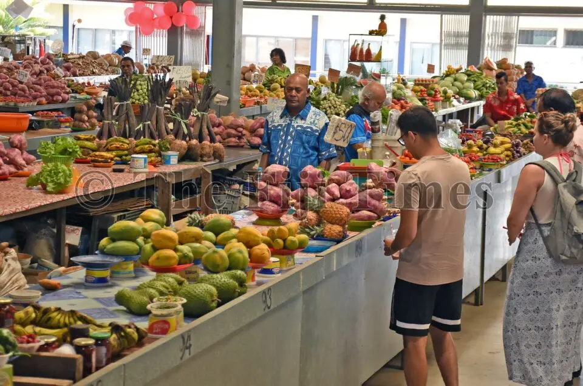

Nadi City Bike Tour
A relaxed, step-by-step cycling route through Nadi's culture, markets, and local art.
-

Start at Bicycle Fiji
Pick up your rental bike and ask the workshop team to adjust the fit. Check your gears and brakes, collect a route map, and bring water before setting out along Wailoaloa Road.
-

Visit Sri Siva Subramaniya Swami Temple
Take time to admire the temple's Dravidian architecture, detailed carvings, ceiling artwork, and colorful statues. Please be respectful of worshippers and follow visitor guidance on site.
-

Explore Nadi Market
Walk through the busy market, browse seasonal fruit and vegetables, and sample local snacks. Keep personal belongings close while you explore.
-

Pause at the International Mission Center
Take a short rest and water break nearby, and be considerate of the local community as you pass through.
-

Discover Sigavou Studios
Visit this family-run gallery to see contemporary Fijian art, including hand-painted masi, a traditional barkcloth. Check opening hours before your ride.
-

Return to Bicycle Fiji
Return your rental bike and let the workshop team know about any issues. They will check and clean the bike after your ride.